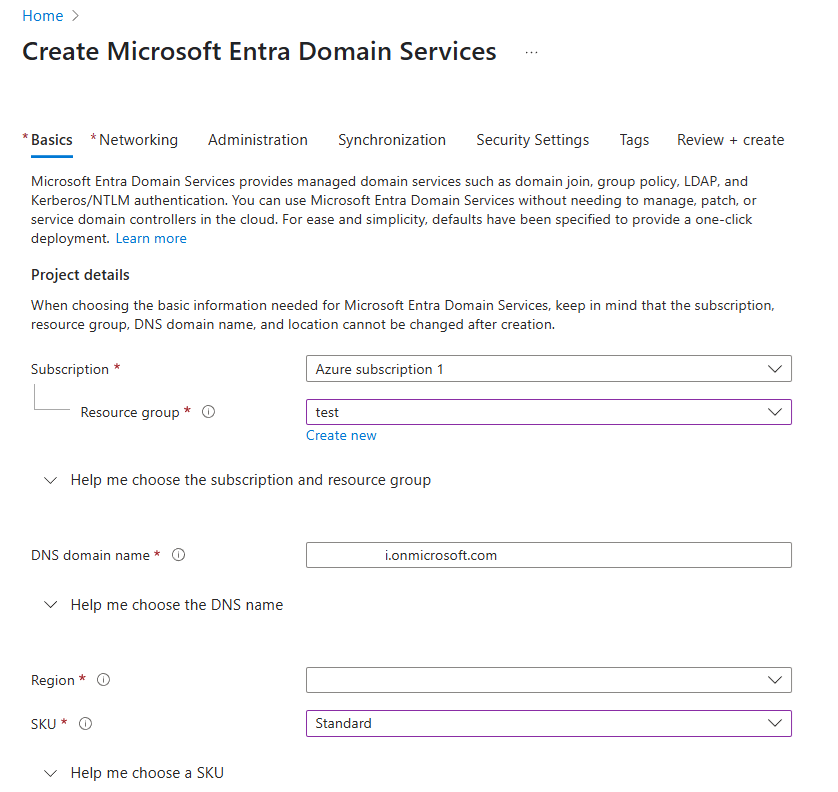
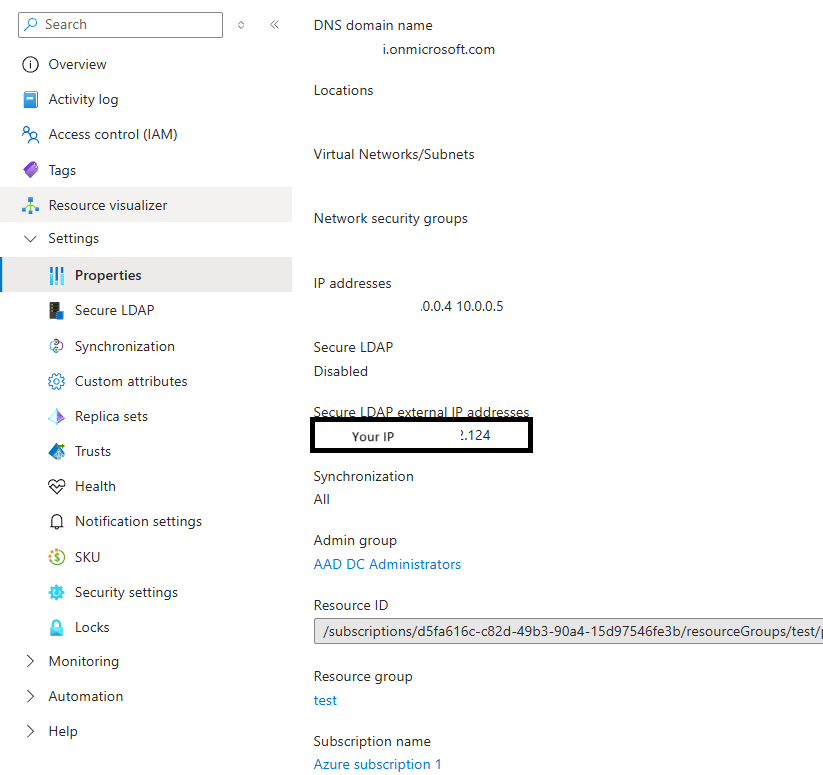
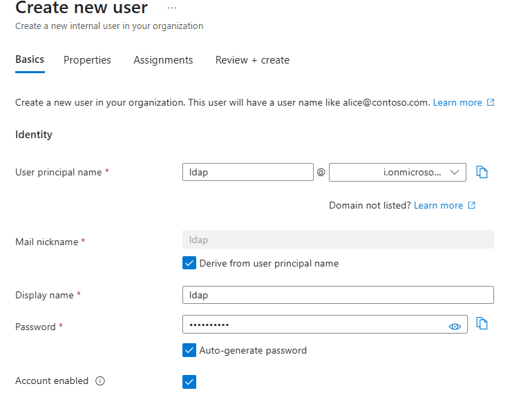

Azure AD Domain Services (LDAPS) Integration
This tutorial is a community contribution and is not supported by the Open WebUI team. It serves only as a demonstration on how to customize Open WebUI for your specific use case. Want to contribute? Check out the contributing tutorial.
This guide explains how to integrate Open WebUI with Azure AD Domain Services (AAD DS) for secure LDAP (LDAPS) authentication.
1. Prerequisites
| Item | Description |
|---|---|
| Azure Account | An account with permissions to deploy AAD DS and modify NSGs. |
| OpenSSL 3.x | Required to generate a self-signed PFX for testing. |
| Domain Name | We'll use openwebui.onmicrosoft.com as an example (your AAD primary domain). |
| Open WebUI Server | A running instance of Open WebUI, deployed via Docker or bare-metal. |
In a production environment, use a PFX certificate issued by a public Certificate Authority (CA) and set LDAP_VALIDATE_CERT=true.
2. Deploy Azure AD Domain Services
-
In the Azure Portal, search for and select Azure AD Domain Services.
-
Click Create.
-
Select your Subscription and Resource Group (or create a new one).
-
For DNS domain name, enter your domain (e.g.,
openwebui.onmicrosoft.com). This value will be used forLDAP_SEARCH_BASElater. -
Keep the default settings for SKU, Replica Set, etc., and click Review + create.

-
After deployment, navigate to the Azure AD DS blade and note the Virtual network / Subnet. If your Open WebUI server is not in the same VNet, you must create an NSG rule to allow traffic on port 636.
3. Find the Secure LDAP External IP
-
Navigate to your AAD DS Blade → Overview.
-
Under Secure LDAP, find the External IP addresses.
-
This IP (e.g.,
1.222.222.222) will be yourLDAP_SERVER_HOSTvalue in the.envfile.
4. Enable Secure LDAP (LDAPS)
4.1. Certificate (PFX) Requirements
| Attribute | Requirement |
|---|---|
| Format | PKCS #12 (.pfx) |
| Encryption | RSA 2048 / SHA-256 |
| Subject Alternative Name (SAN) | Must include wildcards: *.{your_domain}.onmicrosoft.com and {your_domain}.onmicrosoft.com. |
| Password | Required for upload. Make sure to remember it. |
For production, we recommend using Let’s Encrypt or another public CA. The self-signed process below is for testing purposes only.
4.2. Generate a Wildcard PFX with OpenSSL (for testing)
-
Create
openssl_wildcard.cnf:[ req ]
distinguished_name = req_distinguished_name
x509_extensions = v3_ca
req_extensions = v3_req
prompt = no
[ req_distinguished_name ]
C = US
ST = CA
L = San Francisco
O = MyTestOrg
OU = TestDepartment
CN = *.{your_domain}.onmicrosoft.com
[ v3_ca ]
subjectKeyIdentifier = hash
authorityKeyIdentifier = keyid:always,issuer
basicConstraints = critical, CA:FALSE
keyUsage = critical, digitalSignature, keyEncipherment
extendedKeyUsage = serverAuth
subjectAltName = @alt_names
[ v3_req ]
basicConstraints = CA:FALSE
keyUsage = digitalSignature, keyEncipherment
extendedKeyUsage = serverAuth
subjectAltName = @alt_names
[ alt_names ]
DNS.1 = *.{your_domain}.onmicrosoft.com
DNS.2 = {your_domain}.onmicrosoft.comReplace
{your_domain}with your actual domain. -
Generate Key & Certificate:
# Generate a private key
openssl genrsa -out privatekey_wildcard.key 2048
# Create a Certificate Signing Request (CSR)
openssl req -new -key privatekey_wildcard.key \
-out wildcard.csr -config openssl_wildcard.cnf
# Create a self-signed certificate (valid for 365 days)
openssl x509 -req -days 365 -in wildcard.csr \
-signkey privatekey_wildcard.key \
-out certificate_wildcard.crt \
-extensions v3_req -extfile openssl_wildcard.cnf
# Package into a PFX file
openssl pkcs12 -export -out certificate_wildcard.pfx \
-inkey privatekey_wildcard.key -in certificate_wildcard.crt -
Upload to AAD DS:
- Navigate to your AAD DS Blade → Secure LDAP.
- Click the Upload certificate button, select
certificate_wildcard.pfx, and enter the password. - Toggle Secure LDAP to Enabled and click Save.

5. Configure Network Security Group (NSG)
| Setting | Example Value |
|---|---|
| Name | Allow-LDAPS |
| Priority | 310 |
| Source | Any |
| Destination Port | 636 |
| Protocol | TCP |
| Action | Allow |

If allowing access from the internet, restrict the source IP range to the minimum required for security. If Open WebUI is in the same VNet, this step can be skipped.
6. Create a Service Account in Entra ID
-
In the Azure Portal, navigate to Entra ID → Users → New user.
-
Set the username (e.g.,
ldap@{your_domain}.onmicrosoft.com). -
Set a strong password and uncheck User must change password at next sign-in.
-
Go to the Groups tab and add the user to the AAD DC Administrators group (required for querying all users).

7. Configure Open WebUI Environment Variables (.env)
Here is an example configuration for your .env file:
###############################################
# LDAP
###############################################
ENABLE_LDAP="true"
LDAP_SERVER_LABEL="Azure AD DS"
LDAP_SERVER_HOST="1.222.222.222"
LDAP_SERVER_PORT="636"
# TLS Options
LDAP_USE_TLS="true"
LDAP_VALIDATE_CERT="false" # Set to true for a public CA
#LDAP_CA_CERT_FILE="/etc/ssl/certs/openwebui_ca.crt"
# Bind Account
LDAP_APP_DN="ldap@{your_domain}.onmicrosoft.com"
LDAP_APP_PASSWORD="<STRONG-PASSWORD>"
# Search Scope
LDAP_SEARCH_BASE="DC={your_domain},DC=onmicrosoft,DC=com"
LDAP_ATTRIBUTE_FOR_USERNAME="sAMAccountName"
LDAP_ATTRIBUTE_FOR_MAIL="userPrincipalName"
LDAP_SEARCH_FILTER="(&(objectClass=user)(objectCategory=person))"
# Group Synchronization (Optional)
# ENABLE_LDAP_GROUP_MANAGEMENT="true"
# ENABLE_LDAP_GROUP_CREATION="true"
# LDAP_ATTRIBUTE_FOR_GROUPS="memberOf"
Replace placeholders like {your_domain} and <STRONG-PASSWORD> with your actual values.
8. Configure Group Synchronization (Optional)
Open WebUI can synchronize group memberships directly from your LDAP directory. When a user logs in, their group information is fetched and updated within Open WebUI.
To enable this feature, add the following environment variables:
ENABLE_LDAP_GROUP_MANAGEMENT="true": Enables the group management feature.ENABLE_LDAP_GROUP_CREATION="true": If a group from LDAP does not exist in Open WebUI, it will be created automatically.LDAP_ATTRIBUTE_FOR_GROUPS="memberOf": Specifies the LDAP attribute that contains the user's group memberships.memberOfis a standard attribute for this purpose in Active Directory environments.
9. Add CA Certificate to Server (Optional)
To enable full TLS validation (LDAP_VALIDATE_CERT="true"):
sudo cp certificate_wildcard.crt /usr/local/share/ca-certificates/openwebui.crt
sudo update-ca-certificates
Restart Open WebUI after making this change.
10. Test LDAPS Connection
10.1. OpenSSL Handshake Check
openssl s_client -connect 1.222.222.222:636 -showcerts
Look for Verify return code: 0 (ok) to confirm the certificate is trusted.
10.2. ldapsearch (Bind Test)
ldapsearch -H ldaps://1.222.222.222 \
-D "ldap@openwebui.onmicrosoft.com" -w '<PASSWORD>' \
-b "DC=openwebui,DC=onmicrosoft,DC=com" \
-s sub "(sAMAccountName=<test_user_id>)"
A successful search will return the details of the specified user.